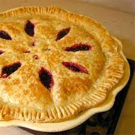

Raspberry Pie

Homepage
Description
This is a raspberry pie. It will probably taste like raspberries and sugar and butter. It is ok.
Personally, I think pecan is better but this is a practice run so I guess we're doing raspberries. I hate the way
the word is spelled though - just say rasberry good god.
Oh shoot I was supposed to describe the recipe for some reason. You're probably gonna need ovens, butter,
berries and flour. Maybe eggs.. Maybe milk... maybe the SOUL OF THE ANTICHRI- I'm
getting carried away.. just read the stuff below dummy.
Ingredients
- 3 cups unbleached all-purpose flour
- 1 tsp salt
- 16 tbsp unsalted butter
- 4 tbsp granulated sugar
- 4-6 tbsp ice water (use minimum and add as needed)
- 1 large egg (egg wash)
- 5 cups of raspberries
- 1 cup of blackberries
- 1 tsp of vanilla extract
- 2 tbsp lemon juice
- 4 tbsp castor sugar
Steps
- Mix together flour, sugar, salt, and other spices if wanted in a medium bowl.
- Add mixture to food processor alongside butter/shortening and pulse until pea-sized balls of
butter and flour form. If you want to do it by hand, press in butter/shortening with thumb and
forefinger in order to create small butter sheets. If hands become hot, cool off under cold
water and dry thoroughly.
- Add in water, I tbsp at a time, until you reach the minimum of 4 tbsp. Keep adding more if
necessary, until you reach a doughy texture. Be careful not to add too much. You want the
minimum amount possible. That being said, don't add too little because your dough will
become difficult to impossible to roll out.
- If in a food processor, transfer the dough to a bowl. Form the dough into a symmetrical
mound and cut in half for two one-crust pies and 60/40 for a two-crust pie. Take one piece of
the dough and put it onto a large piece of plastic wrap. Form it into a circle and tightly wrap
it up into the plastic wrap. Use a rolling pin to push the dough into any extra spaces, filling
out the "bag". Place in the fridge. Repeat for the other piece of dough. If making a two-crust
pie, the 60 will be the bottom of the pie and the 40, the top. Refrigerate for at least an hour or
overnight. Freeze for up to a month.
- Take out the dough and let it soften. Once the dough begins to be malleable, place onto a
well-floured work surface. Lightly flour the top of the dough and the rolling pin. Roll the
dough out to 1 inch past the edge of your pie pan (normally 10 inches, as most pans are 9
inches). Turn the dough a quarter turn after every few rolls to prevent cracking along the
edge. If the dough becomes too brittle, roll out without turning but use a pastry cutter to
ensure the dough doesn't stick, both by prying up the dough and by using the pastry cutter to
lift the dough and throwing flour underneath.
- Roll the dough onto your pin or fold into fourths. Place into the pie pan. Lift up the dough
overhanging to gently guide the dough all the way into the pan. Smooth out any wrinkles and
fill any holes.
- After oven baking at 180 degrees celsius for 15 minutes, mash up the remaining ingredients.
- Pour the mix into the crust and bake for another 15-25 minutes.